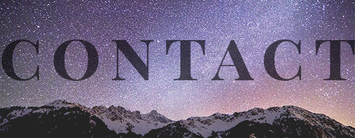
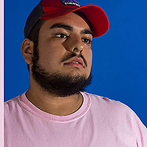

HOME | PIXEL | VECTOR | MOTION | PRINT | CONTACT |
| Robert Thumas | 415-717-7240 | rthumas@mail.ccsf.edu |I was born and raised in San Francisco's The Mission District. After graduating high school, I moved to Chicago to study ASL-English Interpretation. After realizing how boring the major was and how uninfluenced I was, I soul-searched in Chicago for 5 years and found my calling in artwork, specifically in the new digital age. Graphic design had fit into everything I was looking for in a career and everday hobby. I used the culture and people around me to influence and inspire my artwork.